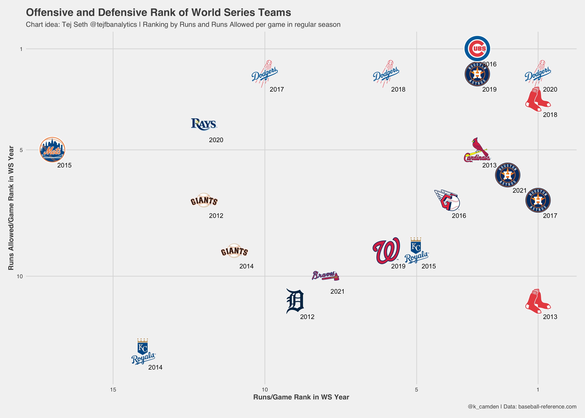

Around a year ago, I had my pushed my first commit to GitHub with the start of mlbplotR. The package was honestly born out envy. I had been seeing so many amazing looking graphs on Twitter surrounding football analysis from the likes of Tej Seth, Ben Baldwin, Arjun Menon, and many others utilizing NFL logos. The logos looked sharp and the ability to add transparency or turn them black and white to help the readability was an awesome touch.
With baseball season coming up, I wanted to create a tool to allow others to use MLB logos in their analysis. Making my own work look better was a pretty nice secondary bonus.
At this point, I had using R for just over a year. I was still very much a newbie to the language in my mind and had no idea how to go about making a package. Everything I’d ever done was likely built upon the tidyverse. I had just started making custom functions to cut down on repeat code.
Also around this time, I wanted to challenge myself to put more of my analysis on Twitter to work on some of the skills that make up a good data scientist. I wanted to become better at using my visuals to get my message across and convey that message in 140 characters or less (less of an issue now that Twitter has expanded character limits).
So, creating mlbplotR was a great way to have my cake and eat it too.
This tweet was the first step in the process. I had taken a look at the source code for nflplotR and adapted some of it to work locally on my machine with MLB logos. I stripped out a lot of the functionality that makes that package great, but just getting logos on a plot was a big step for me.

I eventually DMed @mrcaseb on Twitter to make sure I wasn’t stepping on any toes by making the MLB version of nflplotR and he graciously said to go for it.
Over the next few nights, I tore through the R Packages book by Hadley Wickham and Jenny Bryan. That book and nflplotR gave me the foundation to go and create the baseline for mlbplotR.
Personal Development
Development for mlbplotR continued into the summer as I added more functionality for different use cases. This new experience with package development made an impact on my actual work as well. I was able to create a package at Tread Athletics to improve common workflows among analysts as well as creating a personal package which I use every day.
Package development has pushed my skill in R to another level. I’m able to do things now in my analysis that I certainly wasn’t able to do before. Package development gave me a greater understanding of how a lot of underlying code works and forces me to reframe how I attack problems. I can’t recommend enough creating your own package to speed up those common pesky problems when it comes to your own analysis.
“It doesn’t matter if your first version isn’t perfect as long as the next version is better.”
- Hadley Wickham and Jenny Bryan